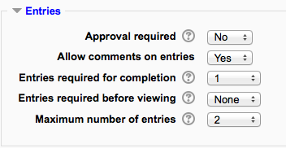
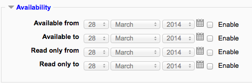
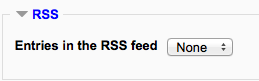
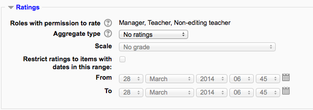

The database activity module allows the teacher and/or students to build, display and search a bank of record entries about any conceivable topic. The format and structure of these entries can be almost unlimited, including images, files, URLs, numbers and text amongst other things.
To add a database activity:
- With the editing turned on,in the section you wish to add your database, click the “Add an activity or resource” link (or, if not present, the “Add an activity” drop down menu )and choose Database All settings may expanded by clicking the “Expand all” link top right.
- Give your new database a name and a description.
- Select your options (see below).
- Click the “Save and display” button at the bottom of the page.
- Define the fields or use a preset.
- Define the templates.
- Add one or two same entries then edit the templates as appropriate.
Name
Choose a helpful name as this will form the link students will click on to access your database.
Description
Type the description of the database here. Click the icon on the left to expand the toolbar to three lines.
Display description on course page
If this box is ticked, the description will appear on the course page just below the name of the Database.
(These settings are collapsed by default.)
Approval required?
If set to “yes”, the entry will only be visible once a teacher has checked and approved it.
Allow comments on entries
If set to “yes”, users will be able to comment on database entries.
Entries required for completion
Select here how many entries you wish the student to add before the activity can be considered “complete”.
Entries required for viewing
Select here how many entries you wish the student to add before they are allowed to see entries by other people. Note: If entries are required before viewing, the database auto-linking filter should be disabled. This is because the database auto-linking filter can’t determine whether a user has submitted the required number of entries.
Maxiumum number of entries
Select here the maximum number of entries you wish students to make.
(These settings are collapsed by default.)
Available from / to
Select here the dates you want the database to be visible to students.
Read only from / to
If you wish, select here the dates you want students to be able to see entries in the database but not be able to add their own. For example you could make a database ‘available from’ January 1st until March 1st, but ‘read only’ from January 1st to February 1st. This means students can only view entries for a month before being able to add their own.
The ‘available from/to’ settings override the ‘read only from/to’ settings. So if a database has ‘read only’ from 1st January, and “available from” 1st February, students will not be able to view its content during January.
(This setting is collapsed by default and only visible if RSS has been enabled on the site and for the database.)
Select the number of entries you wish to appear in the RSS feed here.
(This setting is collapsed by default) Choose the category in which this database will appear if ratings are enabled.
(These settings are collapsed by default)
Roles with permissions to rate
Database entries can be rated using a scale. By default, only teachers can rate database entries, though students can be given permission to do so if desired from Administration > Database administration. This is a useful tool for giving students participation grades. Any ratings given are recorded in the gradebook.
(These settings are collapsed by default)
These settings are visible if Conditional activities and Activity completion have been enabled in the site and the course.
- Approve unapproved entries
- Write comments
- Export all database entries
- Export a database entry
- Export own database entry
- Manage database activity comments
- Manage database activity entries
- Manage templates
- Manage all template presets
- Rate entries
- View all raw ratings given by individuals
- View presets from all users
- View total ratings that anyone received
- View entries
- View the total rating you received
- Write entries
- Add a new database activity